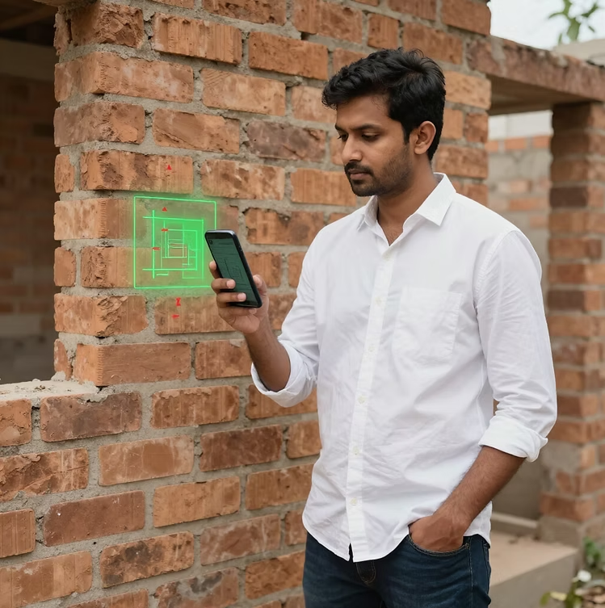
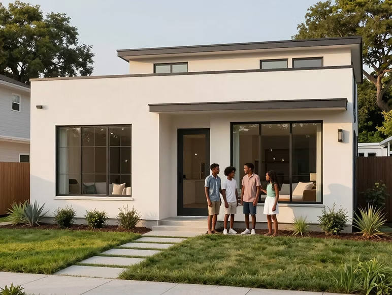

Detecta errores estructurales en tiempo real y protege a tu familia de riesgos sísmicos.
Solicitar Diagnóstico
Miles de viviendas en zonas periféricas se construyen sin supervisión técnica.
Identificación de fallas mediante bounding boxes visuales.
Instrucciones simples para personas sin conocimientos técnicos.
Funcionalidad total incluso en zonas de baja conectividad.

Construye con confianza usando realidad aumentada.
Participa y contribuye al desarrollo de soluciones AR.
Únete a HomeAR para transformar la seguridad estructural.
Sistema que utiliza realidad aumentada para identificar errores estructurales.
Columnas, amarres y otros elementos básicos.
No, existe modo offline.